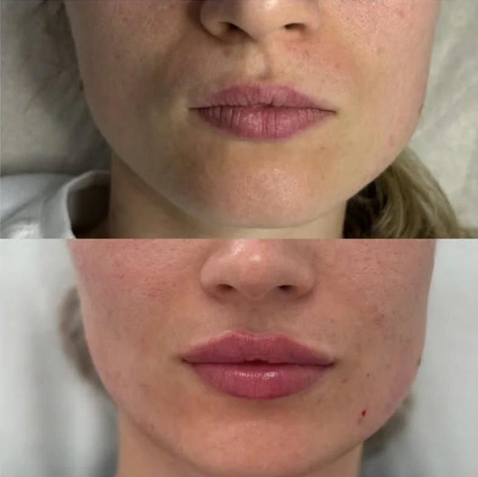
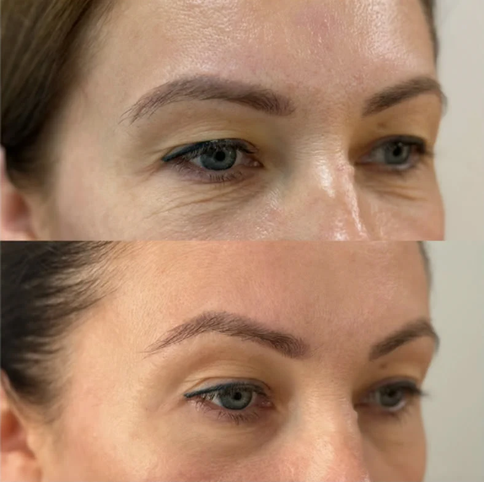
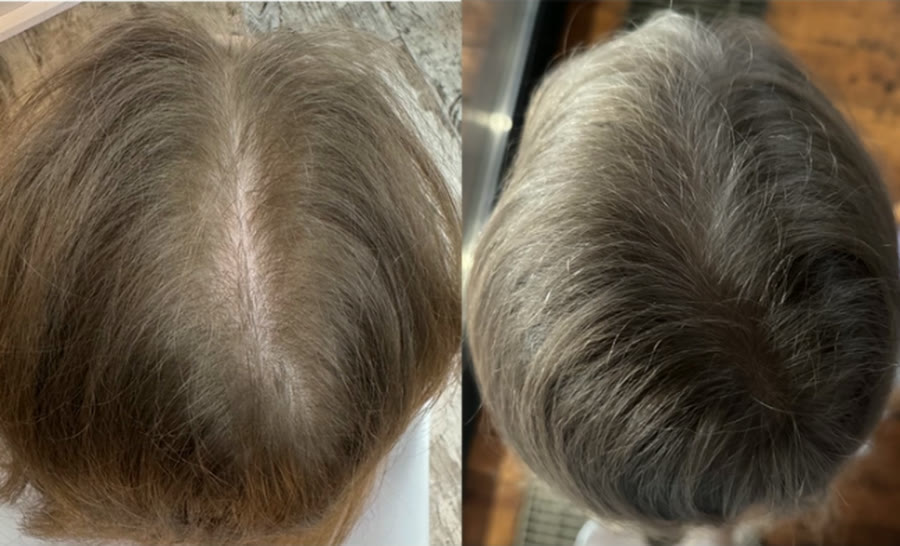
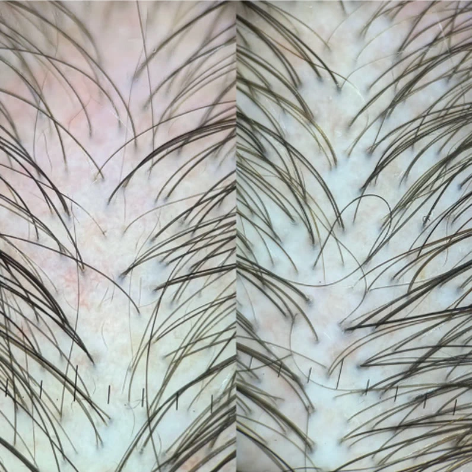
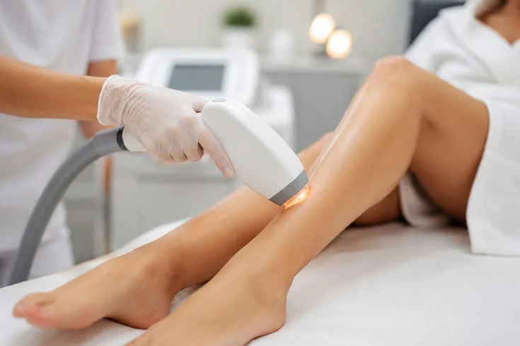

ДоПісляКонтурна пластика губЛікар Тетяна Заєнц
Дерматологія · Трихологія · Косметологія · БориспільМедична клініка · Бориспіль
Your beauty is health
Доказова дерматологія, трихологія, апаратна та ін'єкційна косметологія.
( Роботи лікарів Derm Hub )

ДоПісля ДоПісля
ДоПісля ДоПісля
ДоПісля
ДоПісля ДоПісля
ДоПісля ДоПісля
ДоПісля ДоПісля
ДоПісля ДоПісля
ДоПісля ДоПісля
ДоПісля
ДоПісля
ДоПісля( Відгуки пацієнтів )
«Зробила у вас три процедури мікроголкового RF. Як результат, зменшились пори, покращився тон шкіри, а що найважливіше, підтягнулося не тільки обличчя, а і носогубка. Результат був помітний вже після першої процедури, а зараз я просто в захваті. Раджу всім 🤍»
«Зробила у вас дві процедури з лазерного видалення судин, за дві процедури більше ніж на 50% зменшилися почервоніння, результат чудовий 🔥🔥🔥 Щиро вдячна вам.»
«Вчора робила RF. Це просто вау процедура!!! Практично безболісно, але навіть той маленький біль, який був, він вартий кінцевого результату. Дякую за золоті руки нашої Тані 💕»
«Можете передати Анастасії дякую за чистку обличчя і за підібраний догляд, я вже бачу результат, шкіра зволожена та не стягнута, все зробила, що вона порекомендувала, і я дуже вдячна 🤍»
«Хочу висловити слова подяки Анастасії 🤗 Як і минулого разу Анастасія була дуже уважною та чуйною. Мама дуже задоволена візитом, а щаслива мама — щаслива я 🥰»
«Візит був дуже вдалим, дякую! Маю вже свого косметолога Анастасію, прекрасний педіатр моєї дитини стала ще професійним косметологом, відчувається професійна школа)!»
«Мені дуже сподобалась лікар Анастасія. Одразу викликала до себе прихильність 🥰 Дуже уважна, просто та зрозуміло все пояснила, підібрала догляд 🥰 Дякую 🫶»
«Хотіла б залишити відгук про лікаря Анастасію. Ну така вона вже ж хороша! Мені було дуууже комфортно. Дякую ❤️»
«Так, мені все сподобалось, лікар дуже ввічлива та позитивна, я дуже задоволена, що обрала вашу клініку)»
«Теж все добре, була нещодавно на чистці шкіри, дуже сподобалася пані Анастасія 🌸»
«Добрий день! Все сподобалось, дякую! Ще повернусь і не раз)»
«Добрий день, все сподобалось, все добре, будемо дивитися на результат»
 Діагностика
ДіагностикаРодимки, волосся і шкіра голови

ЛазерЖінки і чоловіки, зони і комплекси
 Ін'єкції
Ін'єкціїБотулінотерапія, біорепарація, контурна пластика
( План догляду )
Від щоденного догляду вдома до процедур у клініці.
Лікар складає план: що і як часто робити саме вам.
( Про клініку )
Головний лікар — Тетяна Заєнц. У команді дерматологи, трихологи, косметологи і майстер з волосся.
( Онлайн-запис )